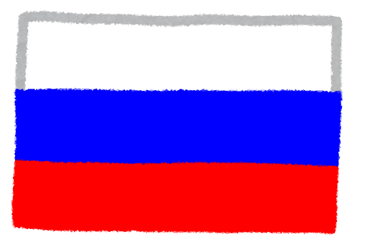

ナビゲーション1
ナビゲーション2
ナビゲーション3
ナビゲーション4
国旗
国名
首都
最大都市
公用語
建国年月日
人口
通貨
面積（km２）
GDP（PPP）
国際電話番号
最高地点
削除
編集
日本
東京都
東京特別区
日本語
紀元前660年2月11日
１億2631万人
円（JPY）
3７7,974.17
５兆1760億ドル
81
富士山
削除
編集
アメリカ合衆国
ワシントンD.C.
ニューヨーク
英語
1776年7月4日日
3億2783万人
ドル（USD）
9,628,000
19兆4171億ドル
１
デナリ
削除
編集
中華人民共和国
北京市
上海市
中国語
1949年10月1日
13億9538万人
人民元（CNY）
9,634,057
18兆088億ドル
86
エベレスト
削除
編集
ドイツ連邦共和国
ベルリン
ベルリン
ドイツ語
1990年10月3日
8300万人
ユーロ（EUR）
357,578
４兆3739億ドル
49
ツークシュピッツェ
削除
編集
イギリス
ロンドン
ロンドン
英語
1927年4月12日
6643万人
UKポンド（GBP）
244,820
２兆3162億ドル
44
ベン・ネヴィス山
削除
編集

ロシア連邦
モスクワ
モスクワ
ロシア語
1991年12月25日
1億4680万人
ロシア・ルーブル（RUB）
17,098,246
３兆4916億ドル
７
エルブルス山
削除
編集
カナダ
オワタ
トロント
英語・フランス語
1982年4月17日
3725万人
カナダドル（CAD）
9,984,670
１兆3032億ドル
１
ローガン山
削除
編集
フランス
パリ
パリ
フランス語
1985年10月4日
6281万人
ユーロ（EUR）
551,500
２兆2525億ドル
33
モンブラン
削除
編集
モロッコ
ラバト
カサブランカ
アラビア語・ベルベル語
1956年3月2日
3365万人
モロッコ・ディルハム（MAD）
446,550
資料なし
212
ツブカル山
削除
編集